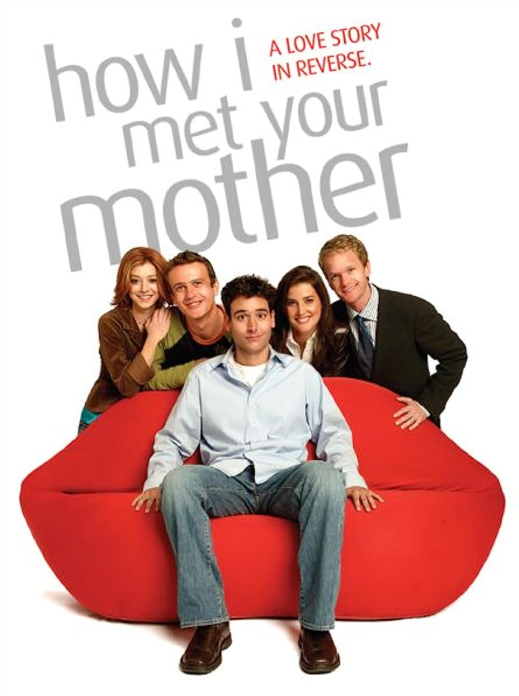

How I Met Your Mother
More Information
See this movie on IMDbSummary:
"How I Met Your Mother" is a sitcom that aired from 2005 to 2014. The show's framing device involves the main character, Ted Mosby, telling his children the story of how he met their mother.
The series is set in New York City and follows Ted and his group of friends, including Marshall, Lily, Barney, and Robin. Throughout the show, Ted recounts his dating adventures and misadventures as he searches for true love.
The story is filled with humorous and heartfelt moments as the characters navigate their careers, relationships, and personal growth. The show also explores the on-again, off-again romance between Ted and Robin and the legendary, outlandish antics of the lovable and womanizing Barney Stinson.
"How I Met Your Mother" is known for its clever narrative structure, catchphrases, and memorable characters. The series is a mix of comedy and heartfelt storytelling, culminating in the eventual revelation of the identity of Ted's future wife, who becomes the mother of his children.